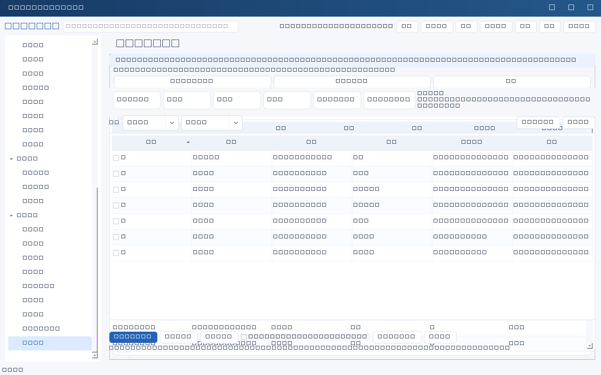

数据体检只读扫描当前已刷新记录，指出台账中的缺口与异常，帮助你判断“资料是否够用”。它不修改任何记录，也不是合规审计结论。
检查项
| 检查项 | 说明 |
|---|---|
| missing_owner 缺负责人 | 负责人、责任人、业务负责人、技术负责人、项目负责人、主管、复核人等字段为空。 |
| missing_date 缺关键日期 | 合同到期日期、资产维保到期日期、权限复核日期、任务截止日期、风险复核日期等为空。 |
| missing_evidence 缺证据 | 状态不是未开始或目标设定，但证据类字段为空。证据是文本索引，仅提示补齐，不能证明资料真实。 |
| duplicate_number 重复编号 | 资产编号、系统名称、合同名称等唯一性字段出现重复值，忽略空值与已归档记录。 |
| overdue_unhandled 超期未处理 | 截止日期已过、状态未结束，且找不到关联的未结子任务或整改任务。 |
| orphan_reference 失效引用 | 关联ID指向的记录不存在或已归档。 |
| review_overdue 复核超期 | 权限复核或风险复核日期已过且状态未结束。 |
| stale_open 长期未更新 | 未结束记录超过180天没有更新。 |
| system_no_recovery 系统缺恢复目标 | 系统台账缺关键性、RTO小时或RPO小时。 |
| review_missing_cycle 考核缺口径 | 考核记录缺考核周期或指标口径。 |
操作与整改
- 进入系统设置→数据体检；页面显示扫描记录数、生成时间与高/中/低统计，可按等级和模块筛选。
- 勾选需要处理的问题（默认不勾选），点击“建立整改任务”。
- 在弹出的可编辑表格中逐项修改任务名称、负责人、截止日期、下一步和验收标准；默认不勾选，必须人工确认后才会创建。
- 确认后按来源记录分别提交，生成待执行任务；同一批失败重试沿用同一请求编号，不会重复创建。
- 可把体检结果导出为CSV或Markdown留档；导出内容不含密钥。
整改跟踪
选中一项发现后可以标记：已整改（问题已修正）、误报忽略（必须填写原因，例如字段不适用）。建立整改任务后系统会自动把对应发现记为“已转任务”。勾选“显示已处理”可以回看这些项。与提醒一样，处理状态绑定当时的记录版本：记录被修改后问题会重新出现，复查默认不会重复报警。这意味着体检清单是一个可收敛的待办列表，而不是每次打开都堆满历史问题。
边界：体检只覆盖上面列出的规则，不等于全面数据治理；未命中不等于合规。整改任务的完成仍需真实证据与验收人，软件不会自动判定问题已解决。

